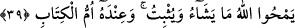

yazılmış “yazıldığı bir” hükmü, kitap “vardır.” Çünkü hikmet, asırların ve milletlerin
değişmesine uygun olarak hükümlerin de değişmesini gerektirir.
Bu ifade, ‘Muhammed peygamber olmuş olsaydı birçok Tevrat ve İncil hükmünü ilgâ
etmemesi gerekirdi.’ diyenlere verilmiş bir cevaptır.
Şeyh ise tefsîrinde şöyle der: “Yâni Allah Teâlâ’nın takdir ettiği her şey için bilinen,
yazılı bir zaman vardır. Bu zaman ne artar, ne de eksilir. Yâhut da öne alınır ne de
geciktirilir.
Mahlûkatın ecellerinden her bir ecelin kitabı Hak Teâlâ’nın nezdindedir. Cenâb-ı
Hak’dan başka kimse, mahlûkatın ecellerine muttalî değildir.
39. Allah dilediğini siler, dilediğini sâbit bırakır. Bütün kitapların aslı O’nun
yanındadır.
“Allah” silmeyi “dilediğini siler,” sâbit bırakmayı “dilediğini sâbit bırakır.” Bu
ifadeden maksad şu mânâlardan birisi olabilir:
1- Nesh etmeyi doğru bulduğu şeyi nesh eder ve yerine daha hayırlısını veya benzerini
getirir. Hikmetinin gereği olan şeyi nesh edilmemiş olarak olduğu gibi bırakır.
2- Tevbe edenlerin günahlarını siler, onların yerine sevabları sâbit kılar.
3- İyilik ve kötülük olmayan amelleri hafaza (kirâmen kâtibîn) meleklerinin
dîvanlarından siler. Çünki hafaza melekleri insanoğlunun söylediği ve yaptığı her şeyi
kaydetmeye memurdur. Pazartesi ve Perşembe günleri bu meleklerin kaydettikleri levh-i
mahfûzdakilerle karşılaştırılır. Sevab ve azâb bakımından karşılığı olmayanlar silinir,
sevab ve azâb bakımından karşılığı olan ise olduğu gibi bırakılır. Şâyet divanın (amel
defterinin) başı ve sonu hayırlı ise aradaki günahlar da silinir. Başında ve sonunda
iyilik bulunmayan divanlardaki günahlar ise olduğu gibi bırakılır.
Meleklerin kalbin zikrini de yazıp yazmadıkları ihtilaflıdır. Süfyan b. Uyeyne’ye:
“Bu iki melek gaybı bilirler mi?” diye sorulunca “Hayır.” dedi. Bunun üzerine:
“Peki kalbin amelinden olup da meydana gelmeyen şeyleri nasıl yazıyorlar?” diye
sorulunca da şöyle cevap verdi:
Tıpkı mücrimler simâlarından tanındığı gibi (bk. er-Rahman, 55/41).
Her amelin tanındığı bir sîmâsı vardır. Bir kul, güzel bir amel işlemek isteyince
ağzından misk kokusu çıkar ve bu sayede kalbinin amelini kaydederler. Kötü bir amel
işlemek isteyip de bu kalbinde yerleşince ağzından leş gibi çirkin bir koku çıkar.
Nevevî, meleklerin kalbin amellerini de yazdığı şeklindeki görüşü daha doğru kabul
eder. İzzeddin b. Abdüsselâm ise “Âlimlerin çoğunun görüşüne göre meleğin kulun